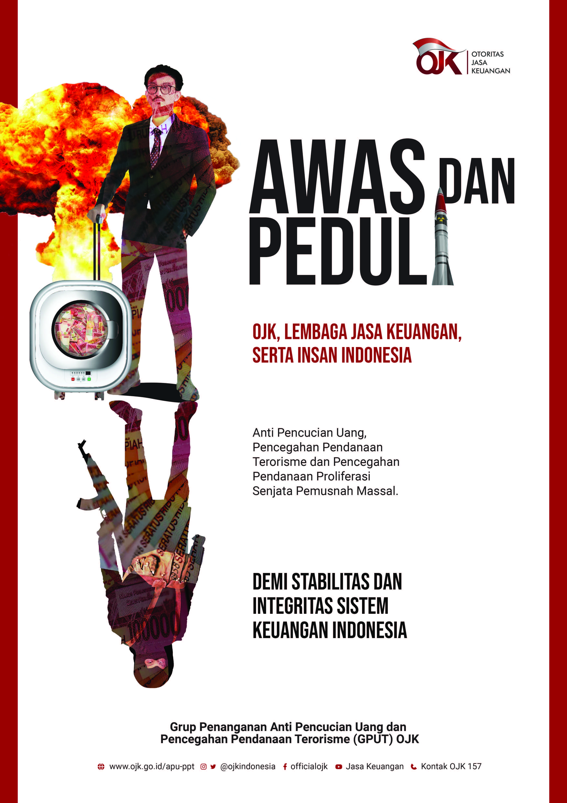

Segala transparansi mengenai seluk-beluk perusahaan BCA Digital sesuai prinsip-prinsip tata kelola dan regulasi yang berlaku bisa kamu lihat di laman ini.

BCA Digital beroperasi dengan transparan dan mengikuti peraturan yang berlaku
Kampanye kepatuhan yang sedang berlangsung
BCA Digital berkomitmen membangun lingkungan bisnis yang sehat, berintegritas, dan bertujuan untuk menjadi Bank terpercaya dalam memberikan layanan berkualitas.
Untuk menjaga komitmen tersebut, kami memiliki sarana pelaporan whistleblowing system (WBS). WBS memberikan kesempatan bagi anda untuk melaporkan dugaan fraud atau pelanggaran hukum, pelanggaran kode etik, maupun pelanggaran benturan kepentingan yang dilakukan oleh pihak internal BCA Digital.
Kami akan memproses lebih lanjut pengaduan yang memenuhi syarat dan kriteria, apabila pelapor memberikan informasi identitas diri berupa nama (diperbolehkan anonym) serta nomor telepon/email yang bisa dihubungi. Kami menjamin kerahasiaan data diri pelapor.
Pelapor harus dapat menjelaskan sekurang-kurangnya:
Kirimkan laporan WBS Anda melalui:
Email Bank
antifraud@bcadigital.co.id
Pelaporan whistleblowing yang dilakukan menggunakan Surat Fisik wajib mencantumkan “Penting dan Rahasia” di sudut kanan atas amplop.
Terima kasih atas kepedulian dan kepercayaan Anda kepada BCA Digital.
Fraud adalah tindakan penyimpangan atau pembiaran yang sengaja dilakukan untuk mengelabui, menipu, atau memanipulasi bank, nasabah, atau pihak lain yang terjadi di lingkungan bank dan/atau menggunakan sarana bank sehingga mengakibatkan bank, nasabah, atau pihak lain menderita kerugian dan/atau pelaku fraud memperoleh keuntungan keuangan baik secara langsung maupun tidak langsung.
Jenis-jenis perbuatan yang tergolong fraud adalah:
Tindakan yang tidak sesuai dengan budaya perusahaan yang telah dirumuskan berdasarkan nilai-nilai positif yang tumbuh dan berkembang di dalam diri segenap insan perusahaan, untuk mencapai tujuan bersama dan juga sebagai acuan bagi insan perusahaan dalam mengambil keputusan dan tindakan.
Tindakan yang menyebabkan suatu kondisi dimana seseorang dalam menjalankan tugas dan kewajibannya mempunyai kepentingan diluar kepentingan dinas, baik yang menyangkut kepentingan pribadi, keluarga, maupun kepentingan pihak-pihak lain sehingga insan perusahaan tersebut dimungkinkan kehilangan obyektivitasnya dalam mengambil keputusan dan kebijakan sesuai wewenang yang telah diberikan perusahaan kepadanya.
Tindakan yang melanggar hukum yang berlaku di Indonesia.
Klik di sini untuk mengunduh dokumen Deklarasi Anti Fraud kami.
BCA Digital berizin dan diawasi oleh Otoritas Jasa Keuangan.
BCA Digital merupakan peserta penjaminan LPS.
Terima kasih sudah mampir! Laman ini lebih nyaman dinikmati di ponsel pintar. Coba sekarang untuk pengalaman yang lebih maksimal.
Nilai simpanan maksimum yang dijamin oleh LPS sebesar Rp 2.000.000.000 (dua miliar rupiah)
dengan tingkat bunga penjaminan maksimum sebesar 4.25% (empat koma dua lima persen) untuk rupiah sesuai ketentuan yang berlaku. Klik disini untuk mengunduh bukti kepesertaan kami.